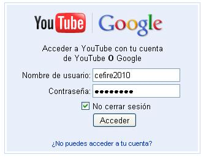
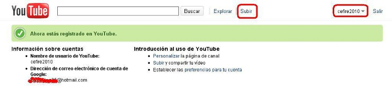
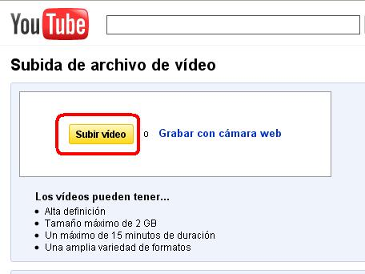
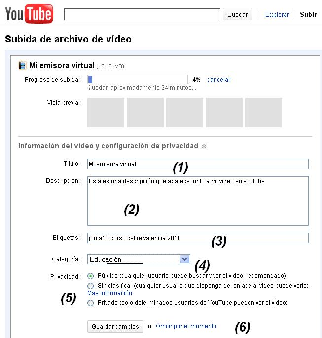

3.1. Acceder y Subir nuestros videos
| SUBIR VIDEOS A YOUTUBE |
| Nuestro primer paso es acceder a nuestra cuenta creada en el apartado anterior. |
| Introduce tu nick y la contraseña. |
| Una vez que hemos entrado ya podemos subir nuestros videos. |
|  |
| Entramos en el apartado subir y vemos la imagen de subir video que mostramos. Selecciona subir video. |
|

|
|
Selecciona un video navegando por algún dispositivo de almacenamiento. una vez que comienza el proceso de subida, debes indicar (1) el título de tu video, detallar (2) un pequeño comentario sobre la finalidad el video o su contenido. Las etiquetas (3) separadas por espacios, permitirán a otros localizar tus videos por las palabras clave que emitas. Indica la categoría a la que pertenece tu video (4). Indica si el mismo es accesible por todos o sólo por gente que tu desees (5). Guarda los cambios (6). Este proceso puede durar varios minutos u horas. Una vez finalizado y procesado ya se puede acceder a tu video, bien por la URL que te detalla al final o, entrando en tu cuenta, y localizando el video. |
|

|
Jo.R.C.A. 2004 - 2011

Edición de Audio y Video con Software Libre by José Ramón Cerdeira Alonso is licensed under a Creative Commons Reconocimiento-No comercial-Compartir bajo la misma licencia 3.0 España License